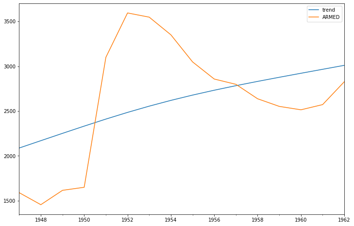

import numpy as np
import pandas as pd
import matplotlib.pyplot as plt
import statsmodels.api as sm
%matplotlib inline
df = sm.datasets.longley.load_pandas().data
#print(sm.datasets.longley.NOTE)This post includes code adapted from python for finance and trading algorithms udemy course and python for finance and trading algorithms udemy course notebooks.
df.head()| TOTEMP | GNPDEFL | GNP | UNEMP | ARMED | POP | YEAR | |
|---|---|---|---|---|---|---|---|
| 0 | 60323.0 | 83.0 | 234289.0 | 2356.0 | 1590.0 | 107608.0 | 1947.0 |
| 1 | 61122.0 | 88.5 | 259426.0 | 2325.0 | 1456.0 | 108632.0 | 1948.0 |
| 2 | 60171.0 | 88.2 | 258054.0 | 3682.0 | 1616.0 | 109773.0 | 1949.0 |
| 3 | 61187.0 | 89.5 | 284599.0 | 3351.0 | 1650.0 | 110929.0 | 1950.0 |
| 4 | 63221.0 | 96.2 | 328975.0 | 2099.0 | 3099.0 | 112075.0 | 1951.0 |
index = pd.Index(sm.tsa.datetools.dates_from_range('1947', '1962'))
df.index = index
df.head()| TOTEMP | GNPDEFL | GNP | UNEMP | ARMED | POP | YEAR | |
|---|---|---|---|---|---|---|---|
| 1947-12-31 | 60323.0 | 83.0 | 234289.0 | 2356.0 | 1590.0 | 107608.0 | 1947.0 |
| 1948-12-31 | 61122.0 | 88.5 | 259426.0 | 2325.0 | 1456.0 | 108632.0 | 1948.0 |
| 1949-12-31 | 60171.0 | 88.2 | 258054.0 | 3682.0 | 1616.0 | 109773.0 | 1949.0 |
| 1950-12-31 | 61187.0 | 89.5 | 284599.0 | 3351.0 | 1650.0 | 110929.0 | 1950.0 |
| 1951-12-31 | 63221.0 | 96.2 | 328975.0 | 2099.0 | 3099.0 | 112075.0 | 1951.0 |
df['ARMED'].plot()
plt.ylabel("ARMED")Text(0, 0.5, 'ARMED')
# unpacking
cycle, trend = sm.tsa.filters.hpfilter(df.ARMED)
cycle1947-12-31 -497.642333
1948-12-31 -713.661033
1949-12-31 -635.368706
1950-12-31 -682.008289
1951-12-31 688.574390
1952-12-31 1108.959755
1953-12-31 992.297873
1954-12-31 731.045710
1955-12-31 370.040046
1956-12-31 124.660757
1957-12-31 15.056446
1958-12-31 -193.702199
1959-12-31 -324.553899
1960-12-31 -407.316313
1961-12-31 -393.604252
1962-12-31 -182.777954
Name: ARMED, dtype: float64type(cycle)pandas.core.series.Seriesdf["trend"] = trend
df[['trend','ARMED']].plot(figsize = (12, 8))
df[['trend','ARMED']]["1950-01-01":"1955-01-01"].plot(figsize = (12, 8))<matplotlib.axes._subplots.AxesSubplot at 0x7f2d5af13940>